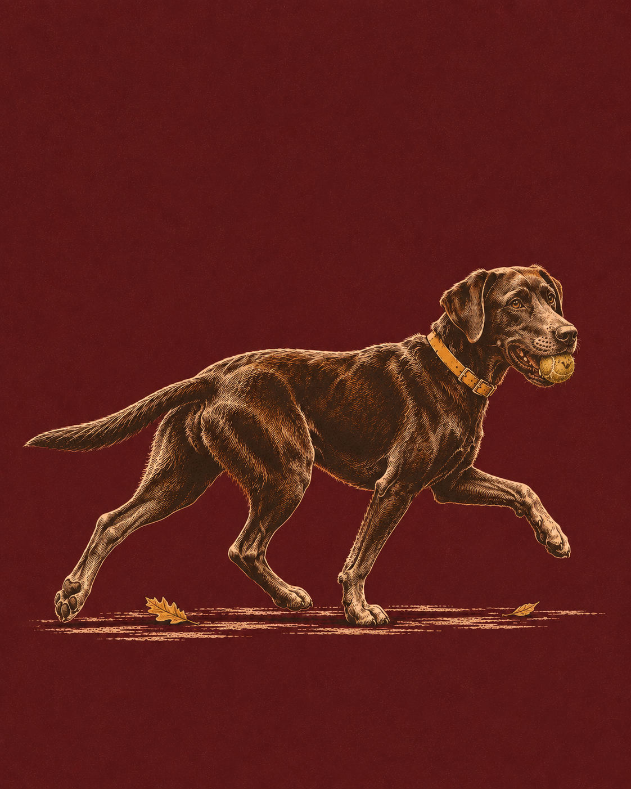

Thursday's ChoiceFor the weekend of Sat 21 – Sun 22 November
The Old Wagon Path Above the Neuse
A short sandy out-and-back among old longleaf pines, starting at the overlook parking area.
· Weekend choice 2 of 2

Why This Week
Start at the overlook parking area and follow the red diamonds of Old Wagon Path. The park describes a longleaf pine still bearing scars from the naval-stores trade; look from the marked trail and give Rupert time to sniff where the path widens. Walk the 0.4-mile path and return the same way, pausing at the overlook well back from the cliff edge. Saturday looks better than Sunday in the dated forecast, with rain likely by Sunday. Stay clear of campground work and the closed swim beach.
Conditions
Saturday: Partly sunny, with a high near 70. Northeast wind 7 to 10 mph. Sunday: Rain likely. Mostly cloudy, with a high near 69. Chance of precipitation is 60%. Saturday night: A chance of rain after 7pm. Mostly cloudy, with a low around 54. Chance of precipitation is 40%. New rainfall amounts less than a tenth of an inch possible. Sunday night: A chance of rain before 7pm, then a slight chance of rain showers. Mostly cloudy, with a low around 48. Chance of precipitation is 40%.
If it turns
Thunder, heavy rain, unsafe footing, high water, strong winds or park closure: Postpone and recheck official status and NWS. Do not substitute another exposed outing.
Forecast snapshot · issued Thu 19 Nov, 06:09 ET · National Weather Service — current point forecast
Start at the Overlook Lot
Follow the red diamonds of Old Wagon Path for 0.4 mile, then return the same way. This plan does not add the Longleaf connector.
Give the Edge Room
Watch for traffic at the campground road crossing, keep Rupert leashed and stay well back from the bluff. Use designated parking away from repaving.
If Plans Change
- CloserA shorter red-diamond walk2 h 00 – 2 h 20 drive
- Bigger dayThe full Old Wagon out-and-back0.8 mi · 2 h 00 – 2 h 20 drive
- AlternativeSave the bluff for a dry day2 h 00 – 2 h 20 drive
Memory Prompt
What caught Rupert’s attention along the red diamonds, and did you spot the old pine’s scars from the marked trail?
Sources
- Official status, access hours and pets retrieved 2026-11-19
- Official trails and parking retrieved 2026-11-19
- Official park map retrieved 2026-11-19
- Official visitor notices retrieved 2026-11-19
- National Weather Service — current point forecast snapshot retrieved 2026-11-19 · link shows the current forecast
Place details as recorded Thu 19 Nov. They stay as published even if the place's record is corrected later.